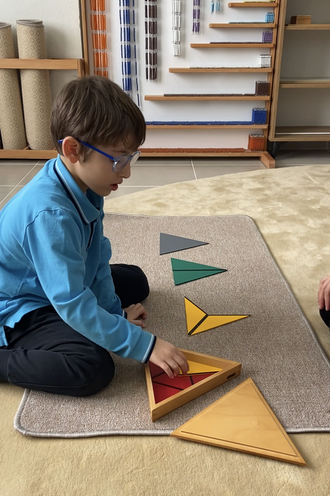
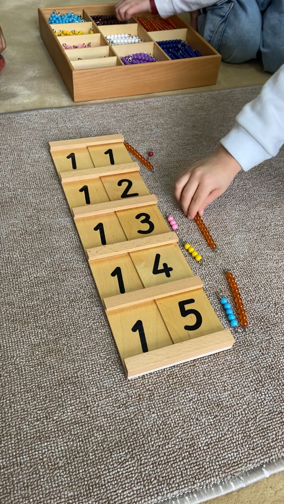
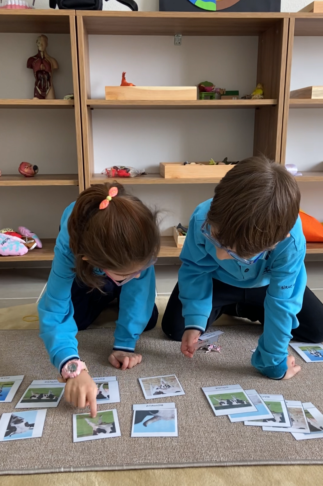

Evreni, Doğayı ve İnsanı Keşfeden Bütünsel Bir Eğitim Yolculuğu
18 Mart Sırac Koleji'nde Montessori Sistemi atölye bazında oluşturulmuştur. Atölyenin eğitim ortamı kazanımlara göre hazırlanmış çevre olarak tasarlanmıştır. Öğrencinin ihtiyacına göre materyal ihtiyacı karşılanmış ve öğrencinin kolaylıkla erişebileceği raf düzeninde iyileştirilmiştir. Öğrenci atölyenin düzeninde aktif rol alır. Atölye içerisinde materyal düzeni için görev paylaşımında bulunurlar.
Montessori öğrencisi her an ya zihinsel ya da fiziksel olarak sürekli aktiftir. Öğrenmek için materyallere ihtiyaç duyar. Materyaller aracılığıyla kendi kendine öğrencidir.
Bilgiyi keşfetmesi, deneyerek, kontrol ederek bilgiye ulaşması beklenir. Montessori atölyesinde günlük 2 derslik çalışma döngüsü vardır. Öğrenci bu sürede özgür seçimlerini kullanarak, istediği alanda, istediği süre miktarınca çalışma imkanı bulur. Odaklandığı andan kopmaz, derinleşebilir ve başladığı çalışma dönüşümü bu süre içerisinde rahatça bitirebilir.
Montessori öğretmeni sınıf içerisinde gözlemci ve gerektiğinde müdahaleci rolündedir. Öğretmen öğrenciyle materyali nasıl kullanacağını gösterir ve geriye çekilir. Öğrenciler bilgiyi somut bir şekilde kavrar, pekiştirir ve yazılı çalışmalarını tamamlamak için sınıflarına geri dönerler.

Tüm dünyada olduğu gibi Türkiye'de de yaşanan bilimsel, deneysel ve teknolojik gelişmeler toplumun her konuya olan bakış açısını, beklentilerini farklılaştırmıştır. Bu değişimler ailelerin eğitim anlayışlarını, isteklerini değiştirmiştir. Geleneksel eğitim anlayışının kabul görmediği günümüzde veliler alternatif okul arayışlarına girmişlerdir.
100 yılı aşkındır modası geçmeyen ve dünyanın dört bir köşesinde hala yankılanan ve etkisi giderek büyüyen Montessori felsefesi eğitimcilerin, ebeveynlerin dikkatini çekmektedir. 2000'li yılların başından bu yana yapılan araştırmalar, açılan Montessori okulları Türkiye'de de farklı eğitim sistemlerinin yer edindiğini göstermektedir.
Her yeni sistem doğduğu coğrafyanın özünden, kültüründen ve inançlarından etkilenmektedir. Montessori sistemi ise sadece çocuğu merkeze alan bir sistemdir ve evrensel öğretileri vardır.
Buna rağmen yine de hangi ülke olursa olsun bir sistemi içinde barındırırken kendi kültürünü, yaşayışını ve inançlarını harmanlamak ister. Türkiye'deki Montessori okulları sistemin metotlarına bağlı kalmakta ve eğitim uygulamalarında ise birbirlerinden farklılıklar göstermektedirler. Okul öncesi düzeyinde yaygınlık gösteren Montessori okulları, ilkokul düzeyinde de yeni yeni açılmaya başlamıştır.

Montessori atölyeleri, öğrencilere bireysel özgürlük tanırken, sorumluluk ve iş birliği becerilerini de geliştirir. Materyallerin düzeni ve ortamın tasarımı, öğrenme sürecini destekleyerek çocukların içsel motivasyonlarını artırır. Eğitim ortamı sadece bilgi vermekle kalmaz, aynı zamanda çocukların yaratıcılığını ve problem çözme yeteneklerini de besler.
